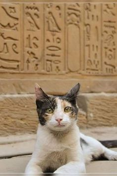
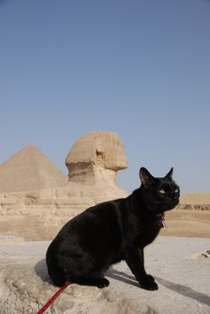

Introdução
Os gatos são animais fascinantes, conhecidos por sua elegância, independência e curiosidade. São animais de estimação populares em todo o mundo, conquistando o coração de milhões de pessoas com suas personalidades únicas e charme irresistível.
Origens
A domesticação dos gatos remonta a milhares de anos, com evidências de sua presença ao lado dos humanos desde os tempos antigos. Originalmente utilizados para controlar pragas, os gatos gradualmente se tornaram parte integrante da vida doméstica, tanto como caçadores de roedores quanto como companheiros leais.
Variedades
Existem diversas raças de gatos, cada uma com suas próprias características físicas e comportamentais. Desde os elegantes siameses até os peludos maine coons, há um gato para todos os gostos. Além das raças reconhecidas, há também os gatos vira-latas, que muitas vezes são tão adoráveis e especiais quanto os de raça.
Cuidados
Os gatos requerem cuidados específicos para garantir seu bem-estar e felicidade. Isso inclui alimentação adequada, visitas regulares ao veterinário, exercícios físicos, atenção e carinho. Além disso, é importante proporcionar um ambiente seguro e estimulante para que o gato possa explorar e se divertir.
 